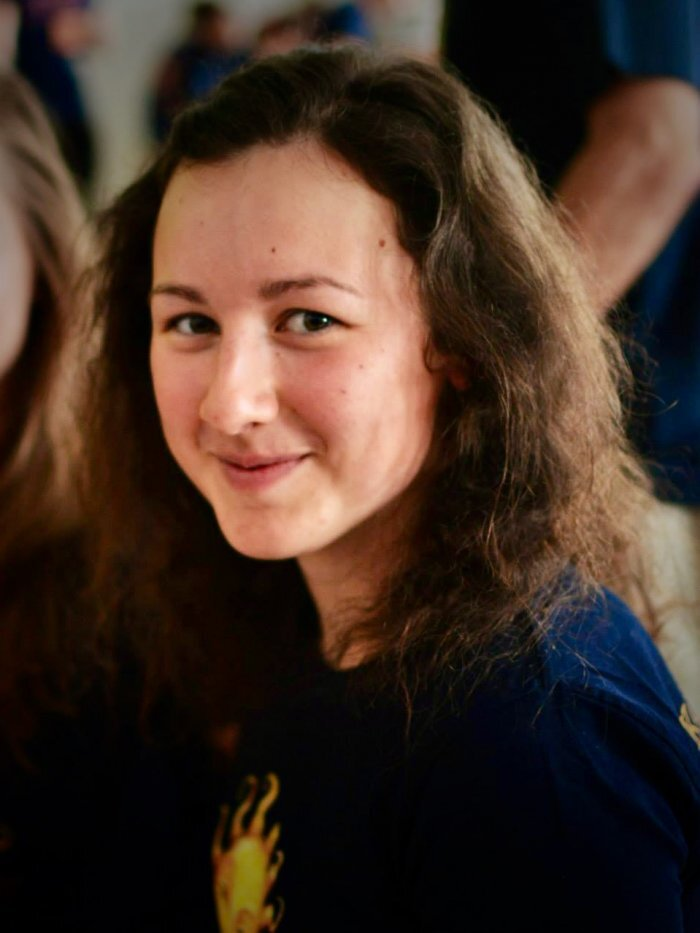

Jmenuji se Eva Valentová a pocházím z jižní Moravy z vinařského městečka Velké Bílovice. Osud mě ale zavál na Slovensko. Aktuálně tedy pobývám v historickém městě Svätý Jur nedaleko od Bratislavy. Vítejte na mém osobním webu, kde se o mně můžete dozvědět více informací.

Mám různé pracovní zkušenosti. Pracovala jsem jako baristka, turistický průvodce, ošetřovatelka, recepční nebo jako virtuální asistentka. Aktuálně pracuji ve společnosti Boataround v Bratislavě v oblasti prodeje a zákaznické podpory. Firma Boataround se věnuje zprostředkovávání pronájmu jachet a jiných lodí po celém světě. Já mám na starost kompletování jednotlivých objednávek na českém, slovenském a španělském trhu a péči o zákazníky.
Můžete mě kontaktovat na mé e-mailové adrese, nebo mě můžete oslovit na Facebooku.